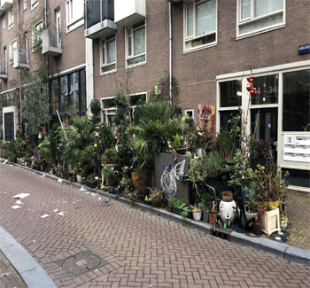

Zelf helpen
Als je nu zo gemotiveerd bent geraakt dat je gelijk in actie wil gaan. Dan heb ik hier een aantal
dingen die je kunt doen om bewust bij te dragen aan het milieu
Zo kan jij helpen
- Recycle uw afval op verantwoorde wijze door gebruik te maken van de daarvoor bestemde faciliteiten.
Bijvoorbeeld hier in Amsterdam, waar ook de organisatie voor milieu werk is
- Koop gerecyclede producten uit duurzame bronnen.
- Overweeg om zonnepanelen te installeren om uw huis milieuvriendelijker te maken.
Het is mogelijk om je eigen, unieke geveltuin te maken
Dit doe je door naar het tuincentrum te gaan, zaden te kopen en voor de rest instructies op zoeken over
hoe je planten in je tuin kan plaatsen
